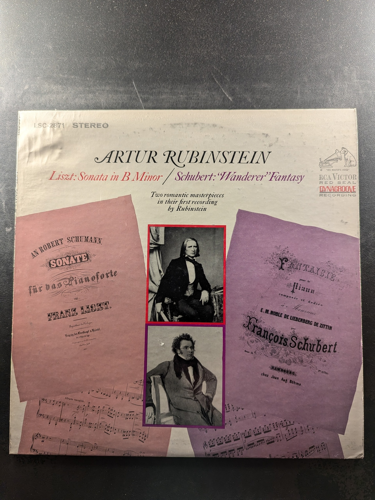
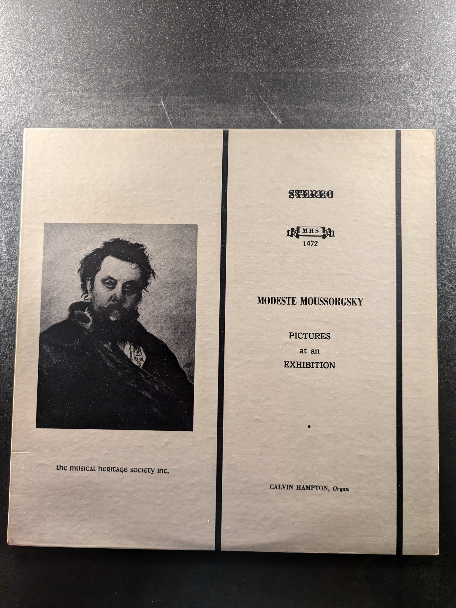

Hammerklavier Sonata No. 29, Op. 106
Rudolf Serkin, Beethoven
Columbia Masterworks
Great Galloping Gottschalk: America's First Superstar
Ivan Davis, Piano
London ffrr CS6943
Liszt: Sonata in B Minor / Schubert: 'Wanderer' Fantasy
Artur Rubinstein
RCA Victor Red Seal LSC-2871
Master Works for Organ Volume 3
Jørgen Ernst Hansen
Nonesuch H-71119
Master Works for Organ Volume I
Jørgen Ernst Hansen
Nonesuch H-71080
Organ Music
Buxtehude
Yorkshire Records STPL 516.350
Master Works for Organ: Volume 7 - The Netherlands: 17th Century
Jørgen Ernst Hansen
Nonesuch H-71136
Bach: Chromatic Fantasy & Fugue in D Minor / Partita No. 5 in G / Partita No. 6 in E Minor
Alexis Weissenberg
Angel 36447
Sonatas No. 14, No. 12, No. 25
Beethoven, Hungerford
Cardinal VCS-10056
Piano Sonata No. 1
Charles Ives
Nonesuch H-71189
Works for Piano Solo: On an Overgrown Path, In the Mist, Sonata, October 1, 1905
Leoš Janáček
the musical heritage society inc. MHS 1659
Pictures at an Exhibition
Modeste Moussorgsky
The Musical Heritage Society Inc. MHS 1472
Nocturnes (Complete) - Vol. I
Guiomar Novaes
Vox STPL 512.950
Bizet 'Carmen' Suite
Los Romeros
Philips 412 609-1
La Sérénade
Thomatos Guitar Trio
Spectrum SR-109
Baroque and On The Street: Pawn Shop
Frederic Hand
Vivaldi Favorites 36687
Music for Flute and Guitar
Peter-Lukas Graf, Konrad Ragossnig
MHS MHS STEREO 3632
Bach and His Friends
Alice Artzt
Kapp Records KS-3655
American Virtuoso
Eliot Fisk
Musical Heritage Society MM 20032
Elizabethan and Jacobean Lute Music
Stanley Buetens
the musical heritage society inc. MHS 3124
The Guitar Artistry of Liona Boyd
Liona Boyd
London Hi-Fi CS 7066
The Spanish Guitar
Alexandre Lagoya
CBS Masterworks M 35837
Baroque Music for Duo Guitar
Duo-Company: Paolini, Guitarists
Turnabout TV 34341
The Virtuoso Guitar
Karl Scheit
Musical Heritage Society Inc. MHS 1893
Partita in A Minor / Suite No. 2 / Suite II Tombeau
William Matthews
Turnabout Vox TV-S 34538
{kind=link}
{kind=link}
{kind=link}
{kind=link}
{kind=link}
{kind=link}
{kind=link}
{kind=link}
{kind=link}
{kind=link}
{kind=link}
{kind=link}
{kind=link}
{kind=link}
{kind=link}
{kind=link}
{kind=link}
{kind=link}
{kind=link}
{kind=link}
{kind=link}
{kind=link}
{kind=link}
{kind=link}
{kind=link}